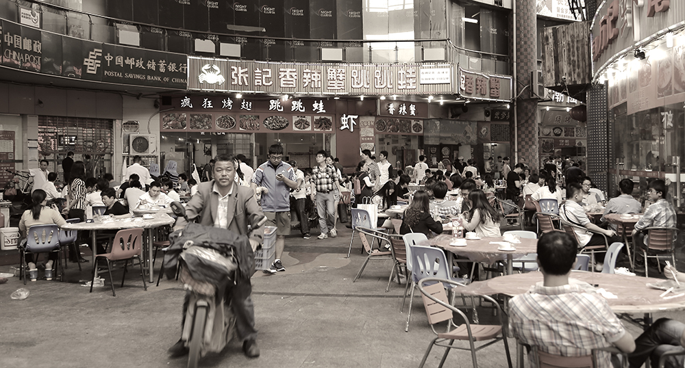

湖南人爱吃，是我们对湖南由来已久的印象。以前坐火车，大包小包一上车就开吃的，必定是湖南人。到了长沙才发现，这个印象实在是太对了。大概没有哪座城市，夜里11、12点还在小吃摊前排长龙，动辄是三、五十米的长龙。
我们落脚的地方在坡子街，这一带很多名小吃。火宫殿一天到晚都很火，晚上11点去都没空位，只好第二天起了个早去吃早茶。火宫殿胜在价钱便宜，所有的小吃都是3、5元一份，极少超过10元的，味道嘛，我觉得只是凑合，不难吃，但也谈不上美味。旁边的向群锅饺店也是晚上11点还排队，饺子是先煎后蒸，吃起来脆而微焦的饺子皮儿又有点蒸饺带粉末儿的香味。双燕馄饨店的米粉是这次唯一吃过不辣的食物。
以前一直无法接受黑色的臭豆腐，只偶尔吃吃上海那种炸得金黄的臭豆腐。但到了长沙，臭豆腐肯定是要吃的。坡子街的武爹臭豆腐，每次经过都排着50米的长龙，火宫殿的臭豆腐就不用说了，门口就立着毛泽东的铜像和题词“火宫殿的臭豆腐闻起来臭，吃起来香”。
最有特点的臭豆腐当属化龙池酒吧一条街上的霸脑壳，很小的门脸，二层小楼，门口放一电视，来回播电视台采访这家店的视频，海报上写着《天天向上》的植入推荐，还有洪晃，杜汶泽的微博推荐，坚决不开分店的老板看见有客人来了马上下楼招呼，这家臭豆腐的特色是豆腐比普通的要小一圈。10元一碗炸小臭豆腐，20元一碗清蒸小臭豆腐，或者小臭豆腐蒸蛋，30元一碗小臭豆腐烧猪脚；各点了一份，最后还是10元炸的好吃，外焦里嫩，嫩的部分入口即化，和别的臭豆腐还是有很大差别，可惜来这里的人似乎不多，我们吃饭点到的，从坐下到吃完离开，都没有满座。
大概年纪渐长，对辣的油炸类的食物的兴趣也渐渐变淡了，要是早十年来长沙，大概会对这些街头美食流连。此外，长沙也印证了我们以往“爱吃的地方，大多脏乱差”的理论，不管是芒果台所在郊区的马栏坡，还是市中心的坡子街，太平老街，都是垃圾遍地。但难得的是，在长沙吃饭，米饭仍然是不收钱的，就像多年前的四川，甑子饭，饭粒偏硬，但管饱。
